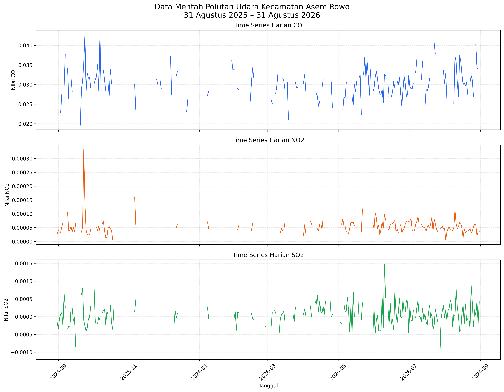
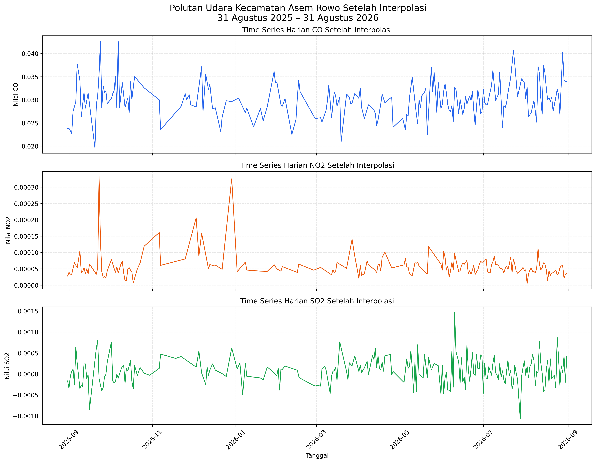

Analisis Time Series Polutan Udara#
1. Gambaran Time Series#
Analisis deret waktu digunakan untuk melihat perubahan nilai polutan berdasarkan urutan waktu. Data yang dianalisis meliputi CO, NO₂, dan SO₂ di Kecamatan Asem Rowo selama periode 31 Agustus 2025 sampai 31 Agustus 2026.
Dataset mempunyai 366 tanggal pengamatan harian. Namun, tidak semua tanggal mempunyai nilai pengamatan satelit yang valid.
Ringkasan kondisi data mentah adalah sebagai berikut:
Polutan |
Jumlah Data |
Data Terisi |
Missing Value |
|---|---|---|---|
CO |
366 |
199 |
167 |
NO₂ |
366 |
191 |
175 |
SO₂ |
366 |
225 |
141 |
2. Grafik Time Series Data Mentah#


Fig. 2 Time series mentah CO, NO₂, dan SO₂ di Kecamatan Asem Rowo.#
Grafik data mentah menampilkan nilai yang berasal dari hasil pengamatan Sentinel-5P. Garis pada beberapa bagian terlihat terputus karena terdapat missing value.
Garis yang terputus tidak berarti nilai polutan sama dengan nol. Kondisi tersebut menunjukkan bahwa pada tanggal tersebut tidak tersedia hasil pengamatan yang valid.
3. Time Series CO#
CO mempunyai 199 data terisi dan 167 missing value. Nilai CO pada data mentah mempunyai karakteristik berikut:
Statistik |
Nilai |
|---|---|
Minimum |
0.019625 |
Tanggal minimum |
20 September 2025 |
Maksimum |
0.042720 |
Tanggal maksimum |
7 Oktober 2025 |
Rata-rata |
0.030106 |
Median |
0.030043 |
Outlier IQR |
6 |
Nilai negatif |
0 |
Pola CO mengalami kenaikan dan penurunan sepanjang periode pengamatan. Berdasarkan metode IQR, terdapat enam nilai yang terdeteksi sebagai outlier.
4. Time Series NO₂#
NO₂ mempunyai 191 data terisi dan 175 missing value. Nilai NO₂ pada data mentah mempunyai karakteristik berikut:
Statistik |
Nilai |
|---|---|
Minimum |
0.00000511 |
Tanggal minimum |
2 Agustus 2026 |
Maksimum |
0.00033235 |
Tanggal maksimum |
23 September 2025 |
Rata-rata |
0.00005843 |
Median |
0.00005019 |
Outlier IQR |
12 |
Nilai negatif |
0 |
NO₂ mempunyai jumlah missing value paling banyak dibandingkan CO dan SO₂. Berdasarkan metode IQR, terdapat 12 nilai yang terdeteksi sebagai outlier.
Perbedaan yang cukup besar antara nilai maksimum dan median menunjukkan adanya beberapa lonjakan nilai NO₂ pada periode tertentu.
5. Time Series SO₂#
SO₂ mempunyai 225 data terisi dan 141 missing value. Nilai SO₂ pada data mentah mempunyai karakteristik berikut:
Statistik |
Nilai |
|---|---|
Minimum |
-0.00107618 |
Tanggal minimum |
28 Juli 2026 |
Maksimum |
0.00147138 |
Tanggal maksimum |
10 Juni 2026 |
Rata-rata |
0.00007109 |
Median |
0.00006744 |
Outlier awal pada data mentah |
4 |
Nilai negatif |
93 |
SO₂ mempunyai tingkat kelengkapan data paling tinggi. Namun, terdapat 93 nilai negatif dan empat outlier pada pemeriksaan awal data mentah.
Nilai negatif pada produk satelit tidak langsung diartikan sebagai konsentrasi fisik negatif. Nilai tersebut dapat berkaitan dengan noise, ketidakpastian instrumen, koreksi latar belakang, atau sinyal SO₂ yang sangat rendah.
Pada tahap preprocessing, nilai negatif SO₂ ditandai sebagai data tidak valid. Setelah nilai negatif dikeluarkan dan IQR dihitung kembali, ditemukan dua outlier pada data SO₂ yang tersisa.
6. Penanganan Data Tidak Valid#
Sebelum interpolasi, dilakukan penanganan terhadap nilai yang dianggap tidak valid.
Tahapan yang dilakukan adalah:
Memeriksa nilai negatif pada setiap polutan.
Menandai 93 nilai negatif SO₂ sebagai missing value.
Menghitung batas bawah dan batas atas menggunakan metode IQR.
Menandai outlier sebagai missing value.
Melakukan interpolasi untuk mengisi seluruh nilai yang kosong.
Menggunakan
forward filldanbackward fillapabila masih terdapat nilai kosong pada awal atau akhir periode.
Hasil deteksi outlier pada tahap preprocessing adalah:
Polutan |
Batas Bawah |
Batas Atas |
Outlier |
|---|---|---|---|
CO |
0.021211 |
0.038740 |
6 |
NO₂ |
0.000003 |
0.000102 |
12 |
SO₂ |
-0.000302 |
0.000802 |
2 |
7. Interpolasi Missing Value#
Missing value diisi menggunakan interpolasi berdasarkan waktu. Interpolasi memperkirakan nilai kosong berdasarkan nilai sebelum dan sesudah tanggal tersebut.
Rumus sederhana interpolasi linear adalah:
[ y=y_1+\frac{x-x_1}{x_2-x_1}(y_2-y_1) ]
Keterangan:
(y) adalah nilai yang akan diperkirakan.
(y_1) adalah nilai sebelum data kosong.
(y_2) adalah nilai setelah data kosong.
(x) adalah waktu data yang kosong.
(x_1) dan (x_2) adalah waktu dari nilai pembanding.
Implementasi interpolasi pada Python dilakukan sebagai berikut:
df_interpolasi[nama] = (
df_interpolasi[nama]
.interpolate(method="time")
.ffill()
.bfill()
)
Ringkasan missing value sebelum dan sesudah preprocessing adalah:
Polutan |
Missing Awal |
Missing Akhir |
|---|---|---|
CO |
167 |
0 |
NO₂ |
175 |
0 |
SO₂ |
141 |
0 |
Nilai negatif akhir juga telah diperiksa:
Polutan |
Nilai Negatif Awal |
Nilai Negatif Akhir |
|---|---|---|
CO |
0 |
0 |
NO₂ |
0 |
0 |
SO₂ |
93 |
0 |
8. Grafik Setelah Interpolasi#


Fig. 3 Time series CO, NO₂, dan SO₂ setelah missing value diisi menggunakan interpolasi.#
Grafik setelah interpolasi mempunyai garis yang tersambung karena seluruh tanggal telah memiliki nilai.
Nilai hasil interpolasi merupakan nilai estimasi berdasarkan pola data yang berdekatan. Oleh karena itu, nilai hasil interpolasi perlu dibedakan dari hasil pengamatan asli satelit.
Dataset mentah tetap dipertahankan sebagai dokumentasi sumber data, sedangkan dataset hasil preprocessing digunakan untuk ekstraksi fitur TSFEL dan analisis lanjutan.
9. Perbandingan Sebelum dan Sesudah Preprocessing#
Kondisi |
Data Mentah |
Data Bersih |
|---|---|---|
Jumlah tanggal |
366 |
366 |
Missing CO |
167 |
0 |
Missing NO₂ |
175 |
0 |
Missing SO₂ |
141 |
0 |
Nilai negatif CO |
0 |
0 |
Nilai negatif NO₂ |
0 |
0 |
Nilai negatif SO₂ |
93 |
0 |
File hasil preprocessing disimpan dengan nama:
Timeseries_CO_NO2_SO2_AsemRowo_Clean.csv
Dataset tersebut mempunyai ukuran:
[ 366 \text{ baris}\times4 \text{ kolom} ]
Empat kolom tersebut terdiri atas date, CO, NO2, dan SO2.
10. Interpretasi Hasil#
Berdasarkan visualisasi deret waktu, diperoleh beberapa temuan:
Ketiga polutan mengalami perubahan nilai dari waktu ke waktu.
Data mentah mempunyai banyak bagian yang terputus karena missing value.
NO₂ mempunyai jumlah missing value paling banyak.
SO₂ mempunyai data terisi paling banyak, tetapi juga mempunyai 93 nilai negatif.
CO mempunyai rentang nilai yang lebih stabil dibandingkan NO₂ dan SO₂.
NO₂ dan SO₂ memperlihatkan beberapa lonjakan nilai yang terdeteksi sebagai outlier.
Interpolasi menghasilkan rangkaian data yang lengkap.
Nilai hasil interpolasi merupakan estimasi dan bukan hasil pengamatan satelit secara langsung.
Data hasil preprocessing sudah dapat digunakan untuk ekstraksi fitur TSFEL.
11. Kesimpulan#
Visualisasi time series berhasil menunjukkan perubahan harian CO, NO₂, dan SO₂ di Kecamatan Asem Rowo selama 366 hari.
Data mentah mempunyai missing value, outlier, dan nilai negatif pada SO₂. Setelah preprocessing, setiap polutan mempunyai 366 nilai tanpa missing value dan tanpa nilai negatif.
Data mentah tetap disimpan sebagai dokumentasi pengamatan asli, sedangkan data bersih digunakan untuk proses ekstraksi 68 fitur TSFEL pada setiap polutan, PCA, dan K-Means clustering.